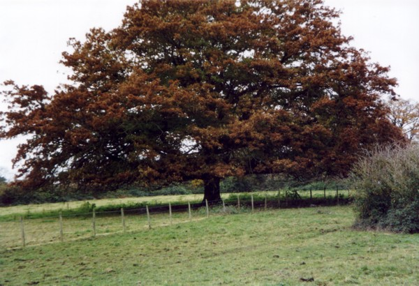

|
|
ShadowsThe science of shadows is not a glamorous area of research and therefore attracts little attention. Sir Isaac Newton made comparisons between light and shade around the frontier area; along the line of black and white light. Shadows have always been with us, from our earliest childhood recollections, and I suppose we all just took them for granted. I certainly did, but when my electronic instruments started giving me unusual signals; this prompted me to look at them in depth. Shadows range from white to grey and black. The black shadows made me wonder where black is in the colour spectrum. There is no black in white light - the prime colours are all there, but I couldnt find black. During one observation I was astounded to see a light grey shadow suddenly turn black when the sun came outwhy? That was my first clue telling me that our perception of shadows was wrong. I started looking at floodlit football games paying particular attention to the centre of the pitch. The four lights are equal here so it should be logical for each light to cancel out the opposite shadows of the players, they dont. You dont have to wait for the next game to see what I mean. If there is more than one lamp in your sitting room at night look carefully at the shadows cast. Each lamp keeps its own shadow/s despite the other lamps in the room.
 Shadows beneath trees on dull overcast days have been a mystery to scientists for centuries. There is now conclusive electronic proof that cloud shadows during the day, nights in miniature, have the same frequency as the earth's shadow. Why? The answer is in the first great scientific discovery of the 21st century.
|
|
Copyright 2003 belongs to John Vincent Moloney (DOB 16th July 1940 Dublin, Eire). Author, discoverer, private scientific researcher. All rights reserved. |